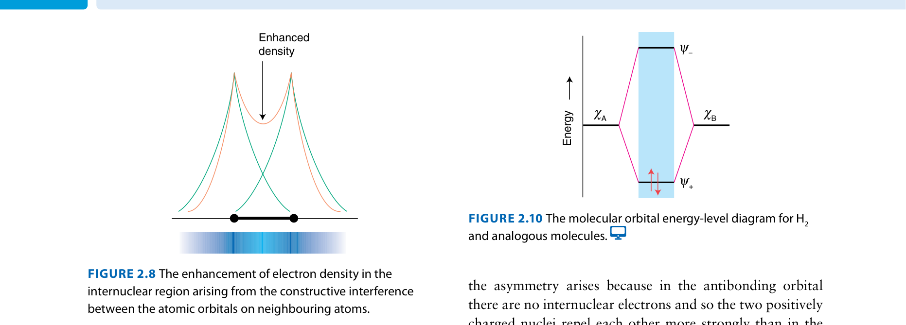
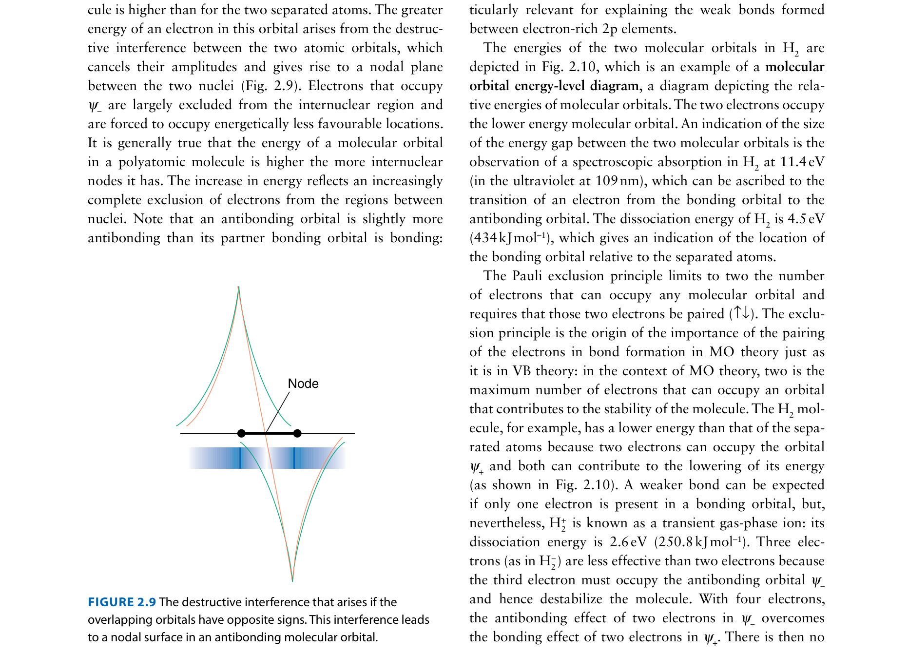
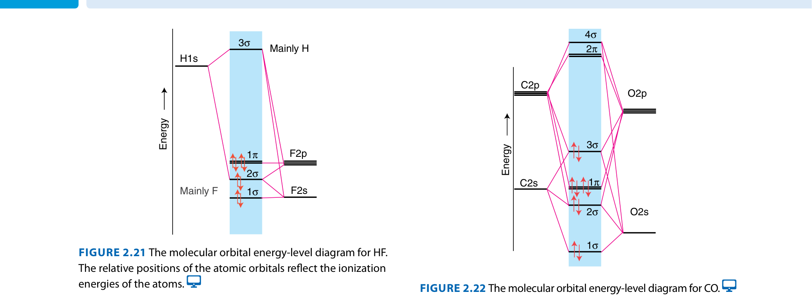
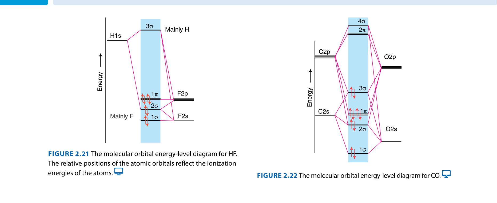
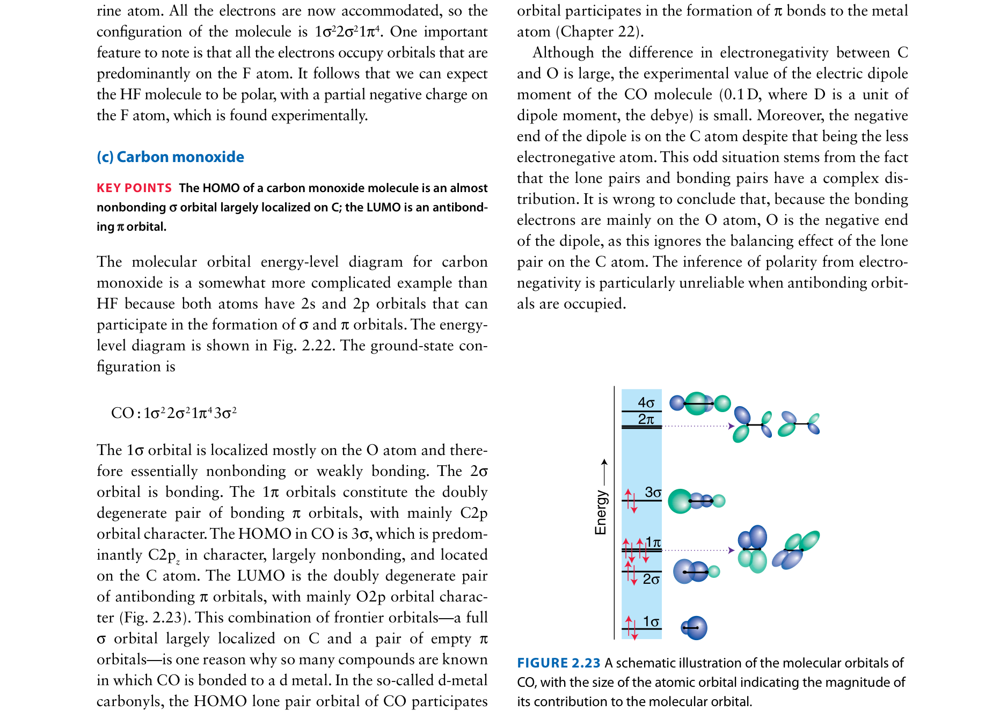

Molecular Bonding
Why is O₂ magnetic? The journey from valence bond theory to molecular orbitals
The Question
Consider O₂, the molecule you breathe. Simple valence bond theory tells us: oxygen has 6 valence electrons, forms a double bond (one σ, one π), and all electrons should be paired.
The blue liquid clings to the magnet. O₂ is paramagnetic.
This single experimental fact forces us to rebuild our understanding of chemical bonding from the ground up. The answer lies in molecular orbital theory.
Valence Bond Theory: What It Gets Right
VB theory correctly predicts bond angles through hybridization. When atomic orbitals mix, they create new hybrid orbitals with specific geometries:
VB theory also correctly identifies:
- Sigma (σ) bonds: Head-on overlap of s-s, s-p, or p-p orbitals
- Pi (π) bonds: Side-by-side overlap of parallel p orbitals
- Bond order: Single (1σ), double (1σ + 1π), triple (1σ + 2π)
Where Valence Bond Theory Fails
VB theory cannot explain:
- The O₂ paradox: Predicts all electrons paired → diamagnetic. Reality: paramagnetic with 2 unpaired electrons.
- Fractional bond orders: Some molecules have bond orders that aren't integers (e.g., O₂⁻ has BO = 1.5)
- Photoelectron spectra: Shows electrons at energy levels VB theory doesn't predict
- Electronic transitions: Cannot explain UV-vis absorption patterns
The problem is fundamental: VB theory treats electrons as localized between two atoms. Reality is more complex—electrons are delocalized over the entire molecule.
Building Molecular Orbitals: The Key Insight
Molecular orbitals form when atomic orbitals on different atoms interfere—like waves. When two waves meet, they can add constructively or destructively.
Interactive: Orbital Overlap
Constructive vs Destructive Interference
Constructive: waves in phase → bonding MO (lower energy)
Destructive: waves out of phase → antibonding MO (higher energy, node between nuclei)
The Math Behind It
Bonding MO: ψbonding = ψA + ψB
Constructive interference → electron density between nuclei → lower energy → stabilizes bond
Antibonding MO: ψantibonding = ψA − ψB
Destructive interference → node between nuclei → higher energy → destabilizes bond
H₂: 2 bonding electrons, 0 antibonding → BO = (2−0)/2 = 1 ✓
Homonuclear Diatomics: The Period 2 Series
Now we can systematically build MO diagrams for all Period 2 diatomic molecules. Watch what happens as we fill the molecular orbitals with electrons.
Key pattern: There's a change in MO ordering at O₂. Li₂ through N₂ have s-p mixing; O₂ through Ne₂ do not.
Interactive: Build MO Diagrams
The AHA! Moment: Why O₂ is Paramagnetic

Two different MO orderings due to s-p mixing
Look at the O₂ MO diagram above. The 1πg* antibonding orbitals are degenerate (same energy). By Hund's rule, electrons fill these orbitals with parallel spins:
Bond order of O₂: (10 bonding − 6 antibonding) / 2 = 2
(Not 10 and 6 total, but rather: σ2s, σ2s*, σ2p, π2p×2, π2p*×2)
Heteronuclear Diatomics: When Atoms Differ
When two different atoms form a bond, their atomic orbitals have different energies. The more electronegative atom has lower energy orbitals.
Key consequence: The more electronegative atom contributes more to the bonding MO. This creates polar bonds—unequal sharing of electrons.
Example: HF
Fluorine is much more electronegative than hydrogen. The F 2p orbital is lower in energy than the H 1s orbital. The bonding MO is mostly F character → polar bond.
Example: CO
Carbon monoxide is isoelectronic with N₂ (same number of electrons). Bond order = 3 (triple bond), but there's a twist...
CO as a Ligand: The Counterintuitive Result
You might expect CO to bind to metals through the oxygen (more electronegative). Wrong!
The HOMO (highest occupied molecular orbital) in CO is a σ orbital with a lone pair on carbon. This is the orbital that donates to metals. CO binds through C, not O.
The Big Picture: Why MO Theory Matters
Molecular orbital theory gives us:
- Correct predictions of bond order (including fractional values)
- Magnetic properties from electron configuration
- Explanations for photoelectron spectra and electronic transitions
- Understanding of reactivity through frontier orbitals
Summary: Period 2 Homonuclear Diatomics
| Molecule | Electrons | Bond Order | Magnetic | Notes |
|---|---|---|---|---|
| Li₂ | 6 | 1.0 | Diamagnetic | σ2s² σ2s*⁰ |
| Be₂ | 8 | 0.0 | — | Does not exist (BO=0) |
| B₂ | 10 | 1.0 | Paramagnetic | Two unpaired e⁻ in π orbitals |
| C₂ | 12 | 2.0 | Diamagnetic | π orbitals filled |
| N₂ | 14 | 3.0 | Diamagnetic | Very stable triple bond |
| O₂ | 16 | 2.0 | Paramagnetic | Two unpaired e⁻ in π* |
| F₂ | 18 | 1.0 | Diamagnetic | Weak bond (low BO) |
| Ne₂ | 20 | 0.0 | — | Does not exist (BO=0) |
Practice: Test Your Understanding
Answer: O₂⁻ has 17 electrons (one more than O₂). The extra electron goes into the antibonding π* orbital. Bond order = (10 − 7) / 2 = 1.5
This explains why superoxide is even more reactive than O₂—weaker bond!
Answer: NO has 15 electrons (odd number). It must have at least one unpaired electron, so it is paramagnetic.
The unpaired electron is in a π* antibonding orbital. Bond order = (10 − 5) / 2 = 2.5
Answer: The HOMO (highest occupied molecular orbital) in CO is a σ orbital with significant electron density on carbon. This is the orbital that acts as a Lewis base and donates to metal centers.
Although oxygen is more electronegative, the frontier orbital character determines reactivity, not electronegativity alone.
Answer: N₂ has a very high bond order (3.0) and a very strong triple bond. Although the HOMO is a σ bonding orbital that could donate electrons, the energy cost of breaking or weakening the N≡N bond is prohibitively high.
This is why nitrogen fixation (converting N₂ to NH₃) requires extreme conditions or specialized enzymes.